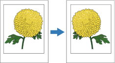

Spejlvendt output og Spejlbillede vender billedet og teksten på siden. Det svarer til at se en udskreven transparent fra bagsiden.

Sådan vælges indstillinger for Spejlvendt output og Spejlbillede:
I vinduet Avanceret skal du vælge en indstilling ud for Spejlvendt output eller Spejlbillede.